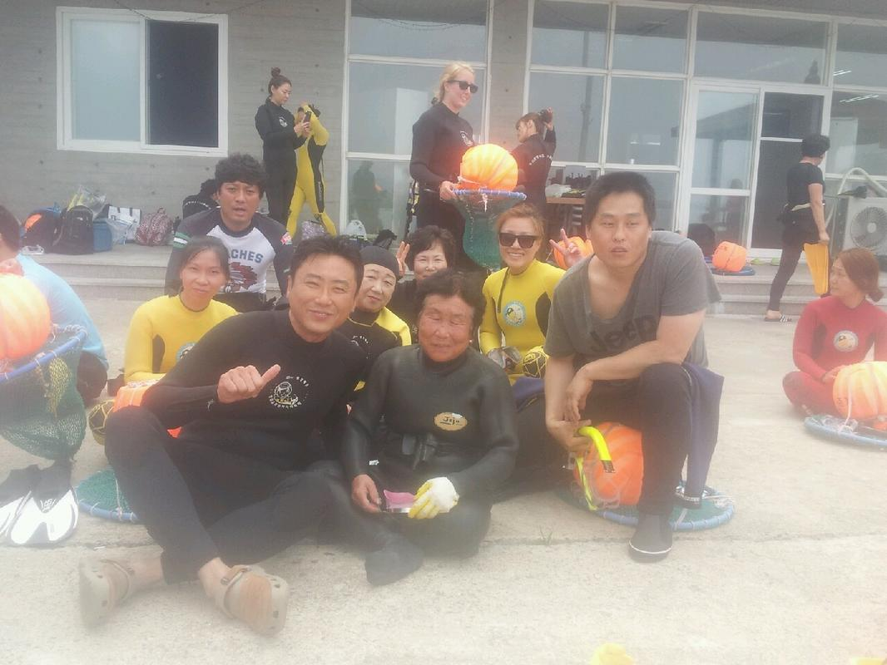
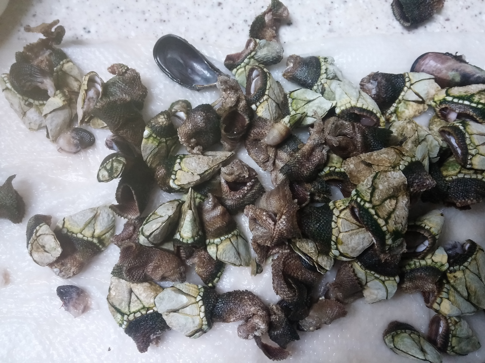
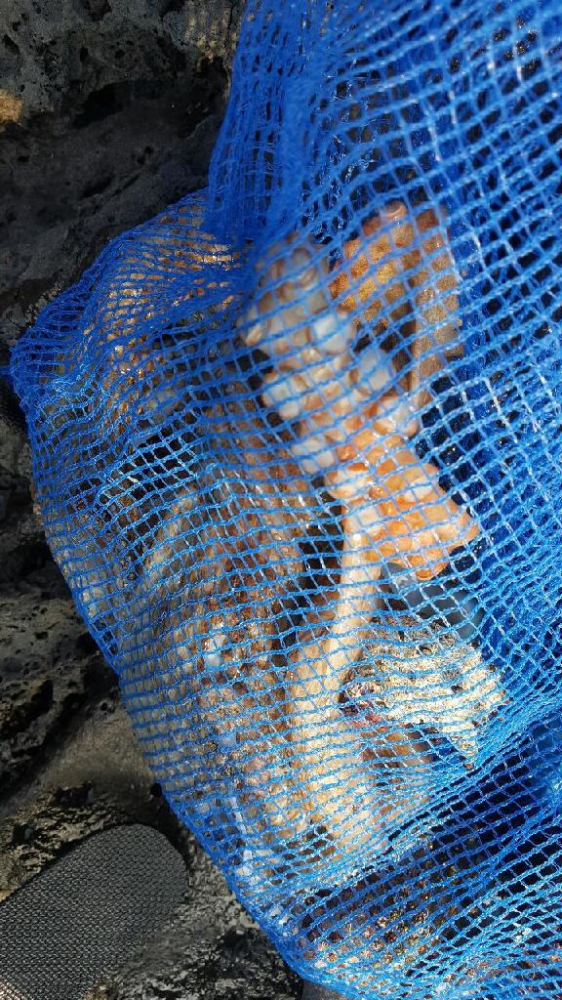

난 조직문화를 싫어한다. 조직문화를 싫어하는 이유는 사회적 강자(조직의
실권자)의 사고방식이 개개인에게 영향을 주기때문이다. 작은 기업에서
조직문화라는 것은 절대자의 심리공간에 불과하다. 이런 공간에서 개개인은
생각할 여력이 없다. 정보도 통제되고 경제권도 절대자에 있기
때문이다. 그래서 믿음이 생겨난다. 절대자의 생각이 곧 나의 생각이
된다. 세뇌가 되는 것이다. 사이비 종교와 다름 없다. 제주도의 몇몇
업체를 다닌 적이 있다. 작은 업체들이였다. 이 업체들은 전형적인
조직문화를 갖는 기업들이였다. 보편적 상식은 통하지 않는다. 예를 들어,
4월 보궐선거에 누구를 찍으라는 지시사항이 내려올 정도다. 그리고
사람들은 아무런 불만없이 지시사항을 따른다. 이런 기업에서 건전한
토론과 상식적 판단을 하기란 어렵다. 절대자가 지배하는 심리적 공간을
탈피하는 방법은 싸우거나 퇴사하는 것이다.
세뇌와 교육은 한끝 차이다. 최강의 세뇌란 교육이란 말도 있다. 나는
세상의 모든 교육을 받으며 살고 싶었다. 수많은 사람을 만나고 다른
문화를 접하면서 내가 가진 고정관념 혹은 세뇌에서 벗어나 다른 사람이
되고 싶었다.
이렇게 하면서 발전하고 싶었지만, 어느새 현실에 안주하며 나이만 먹은
고인물이 된건 아닐까? 하는 생각이 든다.
Hobby
bike
2종 소형 면허 소지자.
이유없이 bike 뜯고 고치기.
동네 biking
camping car
태양광 중소기업에서 web monitoring web만들었었음.
중고 다마스에 태양광 패널 100w설치, mppt, 산업용 battery, inverter로
캠핑카 만들기
물질
한수풀 해녀학교 7기 중퇴.

Figure 1: diver school
오늘의 조과

Figure 2: 거북손

Figure 3: 돌문어
영화 만들기
제주 내안의 documentary 대상수상.
drum
심심풀이 오징어 땅콩
bass
몇십년째 초보 bass
etc
취미를 쓰다보니 너무 많다. 더 이상 취미활동을 하지 않겠다.
Bio
깨달음을 얻기 위해 모든 사회활동을 중지하고 제주도에 왔다. 사회와
단절된채 모든 인맥을 끊고 혼자 살았다. 거의 10년이 지났다. 가족도
없고, 친구도 없다. 아무런 인간관계가 없다. 누구에게 기댈수도 없는 난!
모든 결정을 혼자 내려야 한다.
20세 성인이 된 순간부터, 아니 그 이전부터 나는 부모의 지원없이 혼자
살아야만 했다. 아무런 경제적 도움없이 학교를 다녀야 했기에 늘 경제적
활동을 해야 했다. 배달일, 과외, part time job을 하면서 학교를
졸업했고, 운좋게 좋은 회사에 입사하면서, 나보다 모든 면에서 뛰어난
사람들을 보면서 나도 그런 사람이 되고 싶었다. 그래서 유학을 갔다. 돈
많은 사람이 가는 유학도 있지만, 돈 없는 사람도 유학을 갈 수
있다. 하지만, 힘들다. 여튼 우여곡절끝에, 석사만 하고 다시 한국에
왔다. 한국에 온 이유는 경제적인 이유와 결혼을 하기 위해서였다. 나도
남들과 같이 가정을 꾸리고 싶었다. 하지만, 쉽지 않았고 이렇게 사는게
어떤 의미가 있는가?에 고민을 하면서 나는 사회활동을 중지했다. 그리고
책에서 읽었던, 무문문에 들어갈려고 했다. 무문문은 불가에서 깨달음을
얻고자 하는 승려들이 방안에 처박혀 수양을 하는것을 말한다. 그러나 정식
승려가 되고도 무문문에 들어가는 건 쉬운일이 아니였다. 그래서 일반인도
수양할 수 있는 지리산의 암자를 찾아다녔다. 그러나 암자에서
지낸다는것은 돈을 내고 고시원에서 사는것과 같았다. 자본주의 물들은
암자주인들은 돈을 요구했다. 실망한 나는 발리에 가서 히키코모리가 되려
했다. 적은 돈으로도 생활할 수 있는 발리! 그런데 제주도를 여행왔다가
나는 그대로 정착하게 된다. 히키코모리 생활을 제주에서 하게 된다.
해남이 되려고 해녀학교를 나왔지만, 해남이 될 순 없었다. 해녀가 되려면
절차가 복잡하다. 해녀들이 고령화되어 부족하다고 하지만, 해녀들이 얻는
정부와 지자체의 지원금이 많기 때문에, 아무나 해녀 해남이 될
순없다. 지역 어촌계 해녀들의 전원일치의 동의가 있어야 할 뿐만 아니라,
어촌계에 돈을 내고 어업활동을 해야 한다. 사람은 부족해도, 특권을
놓치기 싫기 때문에 해녀의 충원은 할 수가 없다